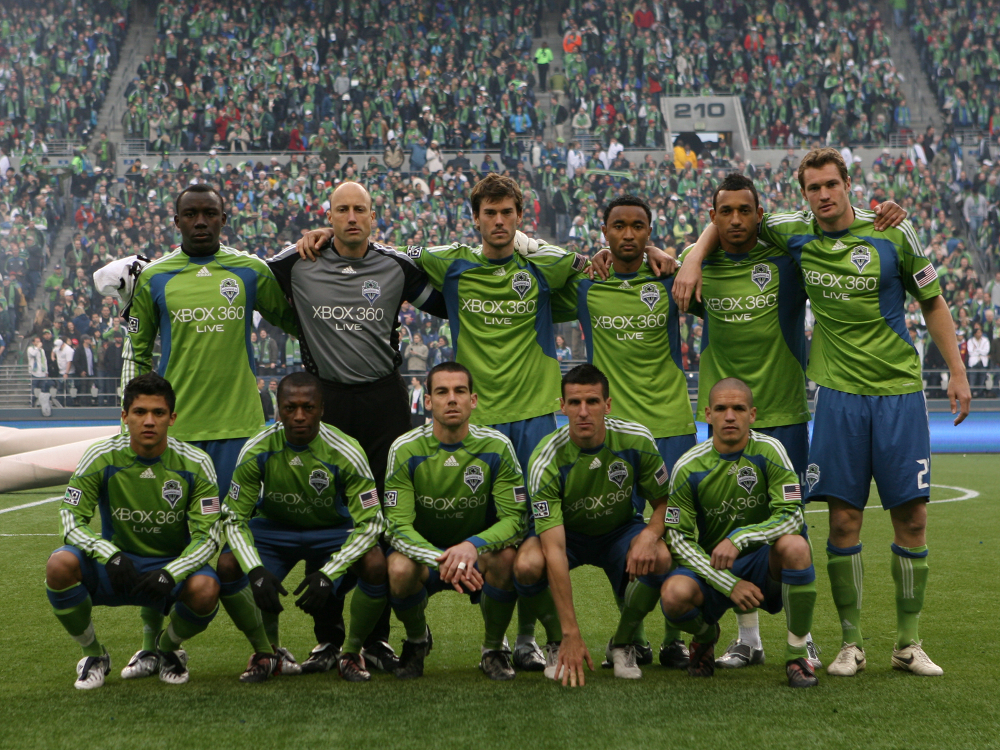
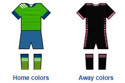

About
Nickname(s) The Sounders
Founded November 13, 2007; 12 years ago
Stadium CenturyLink Field, Seattle, Washington


Majority owner: Adrian Hanauer
General manager: Garth Lagerwey
Head coach: Brian Schmetzer
League: Major League Soccer
2019 Western Conference: 2nd Overall: 4th Playoffs: Champions

Seattle Sounders FC are an American professional soccer club based in Seattle, Washington. The Sounders compete as a member of the Western Conference of Major League Soccer (MLS). The club was established on November 13, 2007, and began play in 2009 as an MLS expansion team. The Sounders are a phoenix club, carrying the same name as the original franchise that competed in the North American Soccer League from 1974 to 1983.
The club's majority owner is Adrian Hanauer, and its minority owners are the estate of Paul Allen, Drew Carey, and 12 families from the Seattle area. Former USL Sounders coach and assistant coach Brian Schmetzer took over as head coach in July 2016 after the departure of Sigi Schmid. The Sounders play their home league matches at CenturyLink Field, with a reduced capacity of 37,722 seats for most matches. Along with several organized groups, a 53-member marching band called 'Sound Wave' supports the club at each home match. Seattle has long-standing rivalries with nearby clubs Portland Timbers and Vancouver Whitecaps FC, with whom it competes for the Cascadia Cup.
The Sounders played their inaugural match on March 19, 2009, winning 3–0 over the New York Red Bulls. Seattle has been among the league's most successful teams, winning the U.S. Open Cup four times, the Supporters' Shield in 2014, and the MLS Cup in 2016 and 2019. The team has qualified for the MLS Cup Playoffs in each of its eleven seasons, making the final three times, and competed in the CONCACAF Champions League five times, advancing to the semifinal round once. The team set a new MLS record for average attendance in each of its first five seasons. The Sounders are ranked as one of the most valuable franchises in North America.
The team's players have included joint top goalscorers Clint Dempsey and Fredy Montero, as well as long-time captain Osvaldo Alonso, and current captain Nicolás Lodeiro. The Sounders also operate a players' academy and lower division teams that have produced homegrown players, including forward Jordan Morris and current Newcastle United F.C. defender DeAndre Yedlin.